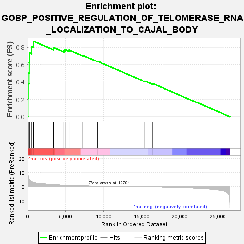
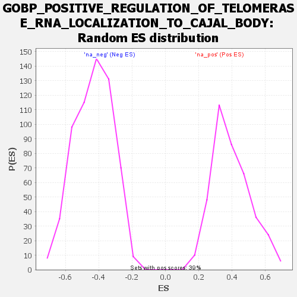

| | | Dataset | wbh_treatment_res_for_gsea |
| Phenotype | NoPhenotypeAvailable |
| Upregulated in class | na_pos |
| GeneSet | GOBP_POSITIVE_REGULATION_OF_TELOMERASE_RNA_LOCALIZATION_TO_CAJAL_BODY |
| Enrichment Score (ES) | 0.8706245 |
| Normalized Enrichment Score (NES) | 2.1920393 |
| Nominal p-value | 0.0 |
| FDR q-value | 6.6639873E-4 |
| FWER p-Value | 0.006 |
Table: GSEA Results Summary

Fig 1: Enrichment plot: GOBP_POSITIVE_REGULATION_OF_TELOMERASE_RNA_LOCALIZATION_TO_CAJAL_BODY
Profile of the Running ES Score & Positions of GeneSet Members on the Rank Ordered List
| SYMBOL | RANK IN GENE LIST | RANK METRIC SCORE | RUNNING ES | CORE ENRICHMENT | | 1 | CCT3 | 21 | 9.178 | 0.2131 | Yes |
| 2 | CCT6A | 55 | 7.247 | 0.3808 | Yes |
| 3 | CCT5 | 151 | 5.468 | 0.5047 | Yes |
| 4 | RUVBL1 | 183 | 5.152 | 0.6236 | Yes |
| 5 | CCT7 | 206 | 4.960 | 0.7383 | Yes |
| 6 | TCP1 | 505 | 3.524 | 0.8093 | Yes |
| 7 | CCT4 | 738 | 3.007 | 0.8706 | Yes |
| 8 | DKC1 | 3371 | 1.154 | 0.7985 | No |
| 9 | RUVBL2 | 4776 | 0.747 | 0.7631 | No |
| 10 | NHP2 | 4922 | 0.716 | 0.7743 | No |
| 11 | SHQ1 | 5424 | 0.615 | 0.7698 | No |
| 12 | CCT8 | 7269 | 0.323 | 0.7079 | No |
| 13 | NOP10 | 9153 | 0.124 | 0.6399 | No |
| 14 | CCT2 | 15421 | -0.306 | 0.4112 | No |
| 15 | NAF1 | 16424 | -0.384 | 0.3825 | No |
Table: GSEA details [plain text format]

Fig 2: GOBP_POSITIVE_REGULATION_OF_TELOMERASE_RNA_LOCALIZATION_TO_CAJAL_BODY: Random ES distribution
Gene set null distribution of ES for GOBP_POSITIVE_REGULATION_OF_TELOMERASE_RNA_LOCALIZATION_TO_CAJAL_BODY